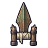
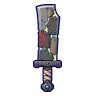

ซอมบี้ชาวนา
มอนธาตุอมตะ Lv 18–39
เจอที่
| แมพ | โซน | Lv | ภูมิภาค |
|---|---|---|---|
| เนินสุสานโบสถ์ร้าง | 18–24 | ป่ากองไฟ | |
| เนินสุสานโบสถ์ร้าง | แถวหลุมศพเก่า | 20–26 | ป่ากองไฟ |
| เนินสุสานโบสถ์ร้าง | สุสานคนนิรนาม | 24–28 | ป่ากองไฟ |
| สุสานใต้ดิน ชั้น 1 | 34–39 | ป่ากองไฟ | |
| หุบหมอกโลงศพ | 28–34 | ป่ากองไฟ | |
| หมู่บ้านคนขุดหลุม | 18–26 | ป่ากองไฟ | |
| หมู่บ้านคนขุดหลุม | หอเฝ้าหลุมศพ | 26–30 | ป่ากองไฟ |
| ทุ่งพวงหรีดแห้ง | 18–26 | ป่ากองไฟ | |
| ทุ่งพวงหรีดแห้ง | ประตูหินพวงหรีดใหญ่ | 26–30 | ป่ากองไฟ |
| หุบซี่โครงยักษ์ | 18–26 | ป่ากองไฟ | |
| หุบซี่โครงยักษ์ | ใต้ซี่โครงยักษ์ | 26–30 | ป่ากองไฟ |
| หอรากมืด (Dark Root) | ห้องกระดูก | 24–33 |
ค่าสถานะตามเลเวล
| Lv | HP | ATK | DEF | MDEF | EXP | Job |
|---|---|---|---|---|---|---|
| 18 | 2,786 | 40–60 | 6 | 2 | 28 | 25 |
| 28 | 3,516 | 48–73 | 10 | 3 | 39 | 35 |
| 39 | 8,048 | 79–119 | 14 | 4 | 52 | 47 |
ตีด้วยธาตุไหนดี
แรงขึ้น: ศักดิ์สิทธิ์ ×1.5 ไฟ ×1.25
เบาลง: พิษ ×0 มืด ×0 อมตะ ×0
วัตถุดิบที่ดรอป
| ของ | โอกาส | |
|---|---|---|
| ผ้าปะชาวนาผี | 60% | 1 ชิ้น (15% ได้ 2) |
อุปกรณ์ที่ดรอป (10)
| ของ | โอกาส |
|---|---|
| 0.12% | |
| 0.12% | |
| 0.12% | |
| 0.12% | |
 คาทาร์ผาลไถซอมบี้ | 0.12% |
| 0.12% | |
| 0.12% | |
| 0.12% | |
 ดาบมีดปังตอผ้าปะ | 0.12% |
| 0.12% |
สกิล
ทุบพื้น (Lv 25+) · ทุบพื้น (Lv 60+) · ดึง (Lv 60+)